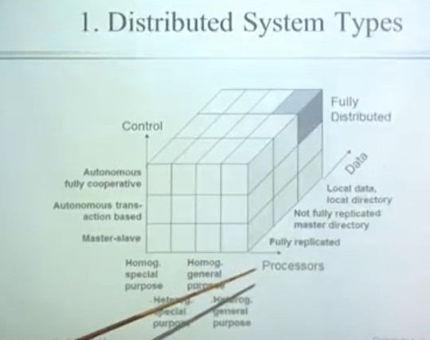

1. 分布式系统
1.1. 核心6问
团队愿景（集群是用来干嘛的）
团队结构（集群由哪些节点组成）
团队沟通（节点之间怎么通信）
团队运作（一个工作job分配下来是怎样运作的）
公共资源分配（共享资源如何处理）
队员冲突处理（容错机制）
1.2. 基本概念
1.2.1. 什么是分布式系统
分布式系统（distributed system）：以一定结构规则可以相互连接的好多节点（服务器）

1.2.2. 副本
副本（replica/copy）：指在分布式系统中为数据或服务提供的冗余。
-
数据副本
指在不同的节点上持久化同一份数据，当出现某一个节点的存储的数据丢失时，可以从副本上读到数据。数据副本是分布式系统解决数据丢失异常的唯一手段。
如 备份的数据库，GFS里面的chuck 都是数据副本 -
服务副本
指数个节点提供某种相同的服务，这种服务一般并不依赖于节点的本地存储，其所需数据一般来自其他节点。 MapReduce里面 WorkNode， 分布式Tensorflow 里的多个Work node /device 都是服务副本
1.2.3. 副本控制协议
副本控制协议：指按特定的协议流程控制副本数据的读写行为，使得副本满足一定的可用性和一致性要求的分布式协议。
例如：
1. 中心化副本协议
primary-secondary协议
2. 去中心化副本协议
paxos
1.2.4. CAP 理论

CAP 理论是由 加州大学的计算机科学家Eric Brewer 提出的分布式系统中最为重要的理论之一。
CAP 理论的定义很简单，CAP 三个字母分别代表了分布式系统中三个相互矛盾的属性
1.2.4.1. Consistency (一致性)：
Consistency (一致性)：CAP 理论中的副本一致性特指强一致性；指的是各个节点的数据一致
1.2.4.2. Availiablity(可用性)：
指系统在出现异常时已经可以提供服务
1.2.4.3. Partition tolerance（分区容错）：
大多数分布式系统都分布在多个子网络。每个子网络就叫做一个区（partition）。分区容错的意思是，某一个或多个区间的通信可能失败。
比如，一台服务器放在中国，另一台服务器放在美国，这就是两个区，它们之间可能无法通信。分区容错要允许系统存在这样的错误
分区容错无法避免，因此可以认为 CAP 的 P 总是成立。CAP 定理告诉我们，剩下的 C 和 A 无法同时做到。
读者问，在什么场合，可用性高于一致性？
举例来说，发布一张网页到 CDN，多个服务器有这张网页的副本。后来发现一个错误，需要更新网页，这时只能每个服务器都更新一遍。
一般来说，网页的更新不是特别强调一致性。短时期内，一些用户拿到老版本，另一些用户拿到新版本，问题不会特别大。当然，所有人最终都会看到新版本。所以，这个场合就是可用性高于一致性。
1.3. 分布式系统分类
1.3.1. 分布式操作系统 DOS
1.3.2. 分布式网络系统 NOS
1.3.3. 分布式中间件 NOS
分布式中间件没有一个比较清晰的定义，一般指位于平台（OS+硬件）与应用之间的通用服务。
基于目的和实现机制的不同，将平台分为以下几类
- 远程过程调用（rpc）
- 面向消息的中间件（Message-Oriented Middleware）
- 事务处理监控（transaction process monitors）
事务管理与协调，负载平衡、失败恢复
1.4. 分布式系统架构
副本控制协议主要分为两大类：“中心化(centralized)副本控制协议”和“去中心化(decentralized)副本控制协议”。
所以 分布式系统架构主要有"中心化"和“去中心化”两类
1.4.1. 中心化系统架构
• 中心化：中心化的设计思想在自然界和人类生活中是如此的普遍和自然，它的设计思想也很简单，分布式集群中的节点按照角色分工，可以分为两种角色--“领导”和“干活的”，中心化的一个思路就是“领导”通常分发任务并监督“干活的”，谁空闲了就给它安排任务，谁病倒了就一脚踢出去，然后把它的任务分给其他人；中心化的另一个思路是领导只负责生成任务而不再指派任务，由每个“干活的”自发去领任务。
1.4.2. 去中心化系统架构
• 去中心化：全球IP互联网就是一个典型的去中心化的分布式控制架构，联网的任意设备宕机都只会影响很小范围的功能。去中心化设计通常没有“领导”和“干活的”，角色一样，地位平等，因此不存在单点故障。实际上，完全意义的去中心化分布式系统并不多见，很多看起来是去中心化但工作机制采用了中心化设计思想的分布式系统正在不断涌现，在这种架构下，集群中的领导是动态选择出来的，而不是人为预先指定的，而且在集群发生故障的情况下，集群的成员会自发举行会议选举新的领导。典型案例如：zookeeper、以及Go语言实现的Etcd。
在这种架构下，集群中的领导是动态选择出来的，而不是人为预先指定的，而且在集群发生故障的情况下，集群的成员会自发举行会议选举新的领导。典型案例如：zookeeper、以及Go语言实现的Etcd。
1.5. 分布式系统--容错技术
错误的类型
|1. 暂时性错误
|2. 间歇性
|3. 永久性
预防错误的冗余设置
|1. 硬件冗余
|2. 软件冗余
|3. 信息冗余
|4. 时间冗余
故障的基本处理方案：
|1. 主动复制 将所有的复制模块协同进行，
|2. 被动复制 只有一个模块处于被动状态，其他模块的交互状态由这一模块的检查点定期检查
|3. 半主动复制
被动复制中的节点故障处理
| 编号 | 类型 | 适用性 | |
|---|---|---|---|
| 1 | 向后式恢复 | 恢复到上一个正常状态的checkpoint 检查点 | 适用于 系统故障无法预知和去掉的情况 |
| 2 | 向前式恢复 | 假定故障是已知的 或可以获得的， 将这些故障去掉，继续运行 |
1.6. 分布式系统--通信技术
1.6.1. 同一节点内
Unix 提供了信号、管道、命名管道、消息列队、共享内存等通讯机制
1.6.2. 不同节点内
提供了网络套接字等
|1. socket通信
|2. PVM/MPI通信
|3. 中间件模式的通信
||a. rpc
基于web服务的通信
1.7. 分布式系统--进程线程管理
1.8. 分布式系统--同步机制
1.8.1. 资源分为：
|1. 各进程可以同时访问
|2. 不允许多个进程访问的-->需要同步机制进行控制管理
1.8.2. 同步机制的评价
|1. 响应时间和吞吐量
|2. 恢复能力
|3. 开销
|4. 公平性
|5. 可拓展性
|6. 连接方式
|7. 初始化
|8. 排序方法
1.8.3. 互斥问题
互斥问题 ：定义一些基本的操作来解决共享资源的多个并发过程的冲突问题
主要目标：保证在任意时刻，只有一个进程对限制性资源的访问
互斥算法需要满足的三个条件：
1 . 依据获得资源进程必须先释放后，另一个进程才能获得
|2. 不同请求应该该相应顺序得到满足。该顺序规则应该，提前规定，如安装逻辑时钟的要求
|3. 若获得资源的每个进程都最终释放资源，则每个请求最终得到满足
1.9. 分布式系统--独一性命名
大规模分布式并行处理系统是由许多松耦合的处理单元组成的，要注意的是，这里指的是处理单元而非处理器。每个单元内的CPU都有自己私有的资源，如总线、内存、硬盘等。这种结构最大的特点在于不共享资源。在不共享资源（Share Nothing）的分布式架构下，节点可以实现无限扩展，即计算能力和存储的扩展性可以成倍增长。
分布式 操作系统
| System | Description | Main Goal |
|---|---|---|
| DOS | Tightly-coupled operating system for multiprocessors and homogeneous multicomputers | Hide and manage hardware resources 隐藏和管理硬件资源 |
| 高度耦合操作系统 | ||
| NOS | Loosely-coupled operating system for heterogeneous multicomputers (LAN and WAN) | Offer local services to remote clients |
| 网络操作系统 | 将当地服务发布到远程 | |
| Middleware | 位于平台（OS+硬件）与应用之间的通用服务 | ·Provide distribution transparenc提供分布式传输 |
2. 集群
高可用集群（High Availability Cluster，简称HA Cluster），是指以减少服务中断时间为目的的服务器集群技术。它通过保护用户的业务程序对外不间断提供的服务，把因软件、硬件、人为造成的故障对业务的影响降低到最小程度。
简单说就是：保证服务不间断地运行，比如，在淘宝网什么时候都可以上去买东西，微信随时可以打开发消息聊天。
2.1. HA 的衡量标准
要保证集群服务100%时间永远完全可用，几乎可以说是一件不可能完成的任务。比如，淘宝在这几年双十一刚开始的时候，一下子进来买东西的人很多，访问量大，都出现一些问题，如下单后却支付不了。所以说只能保证服务尽可能的可用，当然有些场景相信还是可能做到100%可用的。
通常用平均无故障时间(MTTF)来度量系统的可靠性,用平均故障维修时间（MTTR）来度量系统的可维护性。于是可用性被定义为：
$$HA=\frac{MTTF}{(MTTF+MTTR)}\times100%/。$$
具体HA衡量标准:
| 描述 | 通俗叫法 | 可用性级别 | 年度停机时间 |
| ---------------------------- | -------- | ---------- | ------------ |
| 基本可用性 | 2个9 | 99% | 87.6小时 |
| 较高可用性 | 3个9 | 99.9% | 8.8小时 |
| 具有故障自动恢复能力的可用性 | 4个9 | 99.99% | 53分钟 |
| 极高可用性 | 5个9 | 99.999% | 5分钟 |
1.1 什么是集群
简单的说，集群（cluster）就是一组计算机，它们作为一个整体向用户提供一组网络资源。这些单个的计算机系统就是集群的节点（node）。一个理想的集群是，用户从来不会意识到集群系统底层的节点，在他/她们看来，集群是一个系统，而非多个计算机系统。并且集群系统的管理员可以随意增加和删改集群系统的节点。
更详细的说，集群（一组协同工作的计算机）是充分利用计算资源的一个重要概念，因为它能够将工作负载从一个超载的系统（或节点）迁移到集群中的另一个系统上。其处理能力是与专用计算机(小型机,大型机)可相比,但其性价比高于专用计算机.常见的硬件有:结点,网络,存储.软件有:机群系统,节点系统,应用支撑软件。
Cluster集群技术可如下定义：一组相互独立的服务器在网络中表现为单一的系统，并以单一系统的模式加以管理。此单一系统为客户工作站提供高可靠性的服务。大多数模式下，集群中所有的计算机拥有一个共同的名称，集群内任一系统上运行的服务可被所有的网络客户所使用。Cluster必须可以协调管理各分离的组件的错误和失败，并可透明地向Cluster中加入组件。一个Cluster包含多台(至少二台)拥有共享数据存储空间的服务器。任何一台服务器运行一个应用时，应用数据被存储在共享的数据空间内。每台服务器的操作系统和应用程序文件存储在其各自的本地储存空间上。Cluster内各节点服务器通过一内部局域网相互通讯。当一台节点服务器发生故障时，这台服务器上所运行的应用程序将在另一节点服务器上被自动接管。当一个应用服务发生故障时，应用服务将被重新启动或被另一台服务器接管。当以上的任一故障发生时，客户都将能很快连接到新的应用服务上。
1.2 集群系统的主要优点：
(1)高可扩展性：
(2)高可用性HA：集群中的一个节点失效，它的任务可传递给其他节点。可以有效防止单点失效。
(3)高性能：负载平衡集群允许系统同时接入更多的用户。
(4)高性价比：可以采用廉价的符合工业标准的硬件构造高性能的系统。
2.1 集群系统的分类
虽然，根据集群系统的不同特征可以有多种分类方法，但是一般把集群系统分为两类：
(1)、高可用(High Availability)集群,简称HA集群。
这类集群致力于提供高度可靠的服务。就是利用集群系统的容错性对外提供7*24小时不间断的服务，如高可用的文件服务器、数据库服务等关键应用。
负载均衡集群：使任务可以在集群中尽可能平均地分摊不同的计算机进行处理，充分利用集群的处理能力，提高对任务的处理效率。
在实际应用中这几种集群类型可能会混合使用，以提供更加高效稳定的服务。如在一个使用的网络流量负载均衡集群中，就会包含高可用的网络文件系统、高可用的网络服务。
(2)、性能计算(High Perfermance Computing)集群，简称HPC集群，也称为科学计算集群。
在这种集群上运行的是专门开发的并行应用程序，它可以把一个问题的数据分布到多台的计算机上，利用这些计算机的共同资源来完成计算任务，从而可以解决单机不能胜任的工作（如问题规模太大，单机计算速度太慢）。
这类集群致力于提供单个计算机所不能提供的强大的计算能力。如天气预报、石油勘探与油藏模拟、分子模拟、生物计算等。
3.1 什么是高可用性 (HA)
计算机系统的可用性(availability)是通过系统的可靠性(reliability)和可维护性(maintainability)来度量的。工程上通常用平均无故障时间(MTTF)来度量系统的可靠性,用平均维修时间（MTTR）来度量系统的可维护性。于是可用性被定义为：MTTF/(MTTF+MTTR)*100%
负载均衡服务器的高可用性 为了屏蔽负载均衡服务器的失效，需要建立一个备份机。主服务器和备份机上都运行High Availability监控程序，通过传送诸如“I am alive”这样的信息来监控对方的运行状况。当备份机不能在一定的时间内收到这样的信息时，它就接管主服务器的服务IP并继续提供服务；当备份管理器又从主管理器收到“I am alive”这样的信息是，它就释放服务IP地址，这样的主管理器就开开始再次进行集群管理的工作了。为在主服务器失效的情况下系统能正常工作，我们在主、备份机之间实现负载集群系统配置信息的同步与备份，保持二者系统的基本一致。
HA的容错备援运作过程
自动侦测(Auto-Detect)阶段 由主机上的软件通过冗余侦测线，经由复杂的监听程序。逻辑判断，来相互侦测对方运行的情况，所检查的项目有：主机硬件(CPU和周边)、主机网络、主机操作系统、数据库引擎及其它应用程序、主机与磁盘阵列连线。为确保侦测的正确性，而防止错误的判断，可设定安全侦测时间，包括侦测时间间隔，侦测次数以调整安全系数，并且由主机的冗余通信连线，将所汇集的讯息记录下来，以供维护参考。
自动切换(Auto-Switch)阶段 某一主机如果确认对方故障，则正常主机除继续进行原来的任务，还将依据各种容错备援模式接管预先设定的备援作业程序，并进行后续的程序及服务。
自动恢复(Auto-Recovery)阶段 在正常主机代替故障主机工作后，故障主机可离线进行修复工作。在故障主机修复后，透过冗余通讯线与原正常主机连线，自动切换回修复完成的主机上。整个回复过程完成由EDI-HA自动完成，亦可依据预先配置，选择回复动作为半自动或不回复。
3.2、HA三种工作方式：
（1）、主从方式 （非对称方式）
工作原理：主机工作，备机处于监控准备状况；当主机宕机时，备机接管主机的一切工作，待主机恢复正常后，按使用者的设定以自动或手动方式将服务切换到主机上运行，数据的一致性通过共享存储系统解决。
（2）、双机双工方式（互备互援）
工作原理：两台主机同时运行各自的服务工作且相互监测情况，当任一台主机宕机时，另一台主机立即接管它的一切工作，保证工作实时，应用服务系统的关键数据存放在共享存储系统中。
（3）、集群工作方式（多服务器互备方式）
工作原理：多台主机一起工作，各自运行一个或几个服务，各为服务定义一个或多个备用主机，当某个主机故障时，运行在其上的服务就可以被其它主机接管。
当一个人找不到出路的时候，最好的办法就是将当前能做好的事情做到极致，做到无人能及。
3. 参考资料
-
Distributed Systems and Software【29集】(吕荣聪：香港中文大学) ↩